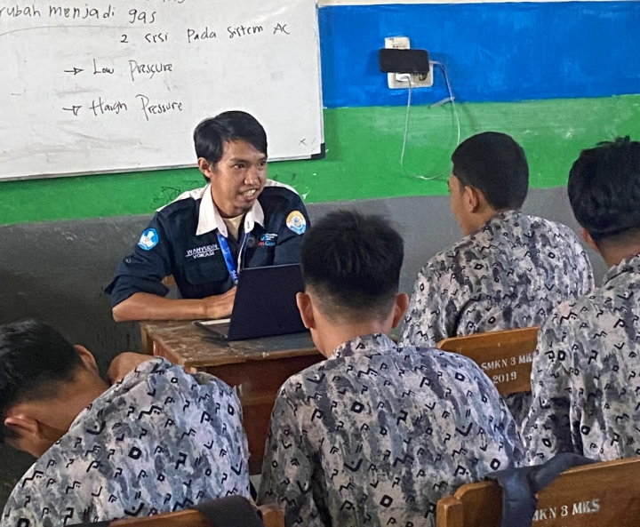
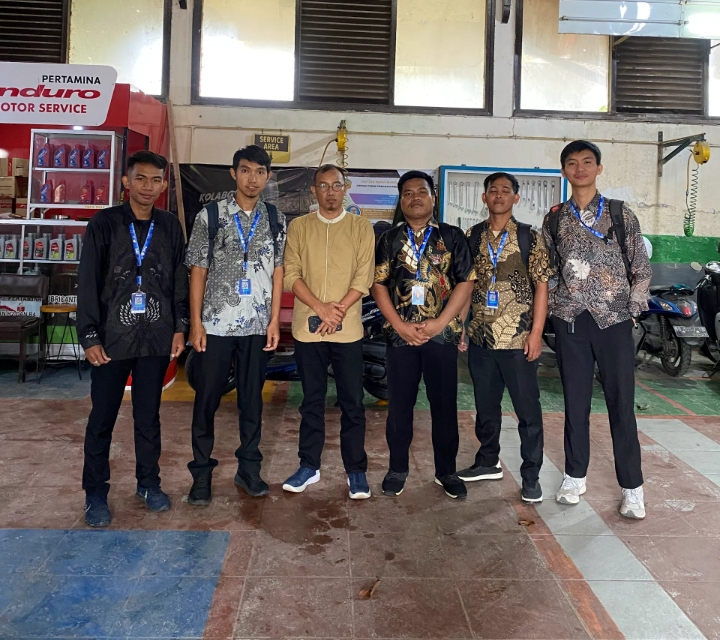
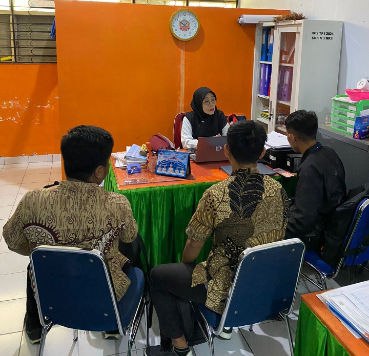

E-Portfolio
WAHYUDIN
Selamat datang di E-Portfolio Wahyudin. Website ini merupakan ruang refleksi awal yang menjadi fondasi dasar dalam membentuk karakter saya sebagai mahasiswa PPG calon guru menuju guru yang profesional, reflektif, dan inovatif.

Profil Mahasiswa
WAHYUDIN
Kontak:
wahyudintamrin@gmail.com www.wahyudintamrin.com +6285299557045Alamat:
Dusun Balocci, Maros, Sulawesi Selatan"Guru yang sejati adalah dia yang tidak pernah berhenti belajar, dan menjadikan setiap ruang kelas sebagai cermin refleksi diri."
Data Diri Akademik
Nomor Induk Mahasiswa
2590074950854
LPTK PPG
Universitas Negeri Makassar
Bidang Studi
Teknik Otomotif
Lokasi PPL Terbimbing
SMK Negeri 3 Makassar
Dosen Pendamping Lapangan
Ir. Wabdillah, S.Pd., M.Pd.
Guru Pamong
Imran Madjid, S.Pd., M.Si., M.Pd.
Asal & Keunikan Daerah
Saya berasal dari Kabupaten Maros. Masyarakat di daerah ini memegang teguh filosofi Siri' na Pacce. Kebanggaan utamanya adalah Karst Maros-Pangkep, sebuah UNESCO Global Geopark. Menjadi kawasan karst terbesar kedua di dunia, bentang alam ini menyimpan keunikan ekosistem endemik dan lukisan gua prasejarah tertua di dunia.
Inspirasi & Tujuan Menjadi Guru Profesional
Terinspirasi dari filosofi Ki Hadjar Dewantara untuk menuntun kodrat anak, tujuan saya menjadi guru profesional adalah menghadirkan pembelajaran inovatif yang berpihak pada murid. Saya berkomitmen menjadi teladan yang memfasilitasi tumbuh kembang potensi terbaik peserta didik demi mewujudkan generasi emas berkarakter Pancasila.
Analisis Artefak Pembelajaran
Bagian ini memuat refleksi dan analisis mendalam terhadap produk pembelajaran (Perangkat Ajar, Media, atau Asesmen) yang telah disusun selama pelaksanaan PPL.
Analisis Perangkat Pembelajaran Siklus 1
Selama penyusunan produk pembelajaran, kendala utama yang saya alami adalah kesulitan memetakan karakteristik dan kesiapan belajar peserta didik secara komprehensif. Di kelas tempat saya melaksanakan PPL, peserta didik memiliki rentang kemampuan kognitif dan gaya belajar yang sangat heterogen. Meskipun saya sudah melakukan asesmen diagnostik di awal, merumuskan rancangan pembelajaran berdiferensiasi (baik diferensiasi konten maupun proses) ke dalam Modul Ajar dan LKPD ternyata sangat menantang. Saya kesulitan menemukan titik keseimbangan antara menyederhanakan materi untuk siswa yang masih slow learner tanpa membuat siswa yang fast learner merasa bosan, sehingga proses penyusunan instrumen dan aktivitas belajar memakan waktu jauh lebih lama dari yang saya perkirakan.
Analisis Perangkat Pembelajaran Siklus 2
Selama penyusunan produk pembelajaran, kendala utama yang saya alami adalah kesulitan memetakan karakteristik dan kesiapan belajar peserta didik secara komprehensif. Di kelas tempat saya melaksanakan PPL, peserta didik memiliki rentang kemampuan kognitif dan gaya belajar yang sangat heterogen. Meskipun saya sudah melakukan asesmen diagnostik di awal, merumuskan rancangan pembelajaran berdiferensiasi (baik diferensiasi konten maupun proses) ke dalam Modul Ajar dan LKPD ternyata sangat menantang. Saya kesulitan menemukan titik keseimbangan antara menyederhanakan materi untuk siswa yang masih slow learner tanpa membuat siswa yang fast learner merasa bosan, sehingga proses penyusunan instrumen dan aktivitas belajar memakan waktu jauh lebih lama dari yang saya perkirakan.
Analisis Perangkat Pembelajaran Siklus 3
Selama penyusunan produk pembelajaran, kendala utama yang saya alami adalah kesulitan memetakan karakteristik dan kesiapan belajar peserta didik secara komprehensif. Di kelas tempat saya melaksanakan PPL, peserta didik memiliki rentang kemampuan kognitif dan gaya belajar yang sangat heterogen. Meskipun saya sudah melakukan asesmen diagnostik di awal, merumuskan rancangan pembelajaran berdiferensiasi (baik diferensiasi konten maupun proses) ke dalam Modul Ajar dan LKPD ternyata sangat menantang. Saya kesulitan menemukan titik keseimbangan antara menyederhanakan materi untuk siswa yang masih slow learner tanpa membuat siswa yang fast learner merasa bosan, sehingga proses penyusunan instrumen dan aktivitas belajar memakan waktu jauh lebih lama dari yang saya perkirakan.
A. Kendala Penyusunan
Selama penyusunan produk pembelajaran, kendala utama yang saya alami adalah kesulitan memetakan karakteristik dan kesiapan belajar peserta didik secara komprehensif. Di kelas tempat saya melaksanakan PPL, peserta didik memiliki rentang kemampuan kognitif dan gaya belajar yang sangat heterogen. Meskipun saya sudah melakukan asesmen diagnostik di awal, merumuskan rancangan pembelajaran berdiferensiasi (baik diferensiasi konten maupun proses) ke dalam Modul Ajar dan LKPD ternyata sangat menantang. Saya kesulitan menemukan titik keseimbangan antara menyederhanakan materi untuk siswa yang masih slow learner tanpa membuat siswa yang fast learner merasa bosan, sehingga proses penyusunan instrumen dan aktivitas belajar memakan waktu jauh lebih lama dari yang saya perkirakan.
B. Adopsi Teori & Pedagogi
Landasan utama pembuatan produk pembelajaran saya adalah filsafat Konstruktivisme, yang diimplementasikan melalui model Problem-Based Learning (PBL). Konsep pedagogi ini meyakini bahwa peserta didik membangun pengetahuannya sendiri melalui pengalaman nyata dan pemecahan masalah, bukan sekadar menerima informasi pasif dari guru. Penerapan pada produk: Hal ini tercermin secara jelas pada Modul Ajar dan LKPD yang saya susun. Pada langkah awal, saya tidak langsung memberikan materi materi, melainkan menyajikan orientasi masalah kontekstual (studi kasus) melalui media tayang. Selanjutnya, LKPD dirancang sebagai panduan bagi peserta didik untuk berdiskusi, menyelidiki, dan menemukan solusi secara mandiri dalam kelompok, di mana peran saya bergeser dari penceramah menjadi fasilitator.
C. Faktor Keberhasilan
Berdasarkan hasil refleksi penerapan di kelas, salah satu faktor utama yang membuat produk pembelajaran saya berhasil adalah penggunaan media pembelajaran yang interaktif dan visual. Sebelumnya, siswa cenderung pasif karena terbiasa dengan metode ceramah. Namun, ketika saya mengimplementasikan media yang saya kembangkan (misalnya: slide presentasi berbasis gamification / video animasi edukatif), tingkat atensi siswa meningkat drastis. Media ini berhasil mengkonkretkan materi yang abstrak menjadi lebih mudah dicerna, sehingga memantik rasa ingin tahu siswa sejak fase apersepsi hingga akhir kegiatan pembelajaran.
D. Adaptasi untuk Situasi Berbeda
Jika produk ini diterapkan pada kelas dengan karakteristik siswa yang berbeda, khususnya jika rata-rata kemampuan kognitif dan daya tangkap siswa lebih rendah, komponen utama yang harus saya rombak adalah Lembar Kerja Peserta Didik (LKPD) dan Asesmen Formatif. Saya perlu mengubah instruksi pada LKPD menjadi lebih step-by-step (memberikan scaffolding atau perancah yang lebih banyak) agar siswa tidak frustrasi. Selain itu, saya perlu menyesuaikan bahan bacaan pada Modul Ajar agar menggunakan diksi yang lebih sederhana, serta memodifikasi rubrik penilaian agar target pencapaian (KKTP) lebih realistis dengan kondisi kesiapan belajar mereka saat itu.
Lampiran Penilaian PPL
Keterangan: Bagian ini berisi hasil penilaian otentik dari Guru Pamong terkait rancangan perangkat pembelajaran (Lampiran 7) dan praktik mengajar di kelas (Lampiran 8) yang telah dilaksanakan selama 3 siklus.
Lampiran 7
Instrumen Penilaian Perangkat Pembelajaran
Dokumen ini memuat nilai dan catatan dari Guru Pamong terhadap Modul Ajar/RPP, Media, LKPD, dan Instrumen Penilaian yang disusun pada siklus 1 hingga 3.
| Siklus | Materi | Nilai |
|---|---|---|
| Siklus 1 | Sistem Pengapian | A (98) |
| Siklus 2 | Sistem AC | A (96) |
| Siklus 3 | Sistem Audio Video | A (95) |
Lampiran 8
Instrumen Penilaian Praktik Mengajar
Dokumen ini berisi hasil evaluasi keterampilan mengajar (keterampilan membuka pelajaran, penguasaan materi, pengelolaan kelas) yang dinilai oleh Guru Pamong.
| Siklus | Fokus Keterampilan | Nilai |
|---|---|---|
| Siklus 1 | Pengelolaan Kelas | A (95) |
| Siklus 2 | Penggunaan Media | A (97) |
| Siklus 3 | Evaluasi Pembelajaran | A (96) |
Model Guru yang Dituju
Saya berkomitmen menjadi pendidik humanis, reflektif, dan inovatif yang menguasai empat kompetensi inti untuk mewujudkan pembelajaran berpihak pada murid, menanamkan karakter pembelajar mendalam, serta membangun kolaborasi sinergis.
Misi Pribadi
- Mewujudkan Pembelajaran yang Berpihak pada Murid.
- Menjadi Pembelajar Sepanjang Hayat yang Inovatif.
- Menanamkan Karakter Profil Pelajar Pancasila.
- Membangun Kolaborasi yang Sinergis.
Kompetensi Inti
- Pedagogik: Mengelola pembelajaran dan memahami karakteristik murid.
- Profesional: Menguasai materi pelajaran secara mendalam.
- Kepribadian: Menjadi teladan berkarakter mulia dan dewasa.
- Sosial: Berkomunikasi efektif dengan masyarakat sekolah.
Karakter Pendidik
- Reflektif: Selalu mengevaluasi diri demi perbaikan kualitas pembelajaran.
- Kolaboratif: Terbuka bekerja sama untuk memajukan ekosistem pendidikan.
- Inovatif: Kreatif menghadirkan metode dan media baru di kelas.
- Humanis: Mengajar dengan empati, kasih sayang, dan berpihak pada murid.
Refleksi Akhir & Filosofi
Bagian ini memuat refleksi akhir dan filosofi pendidikan yang akan di adopsi dalam pembelajaran dikelas ketika melaksanan PPL Mandiri dan ketika penulis menjadi seorang guru.
Refleksi
Menjalani Praktik Pengalaman Lapangan (PPL) Terbimbing di SMK Negeri 3 Makassar pada program keahlian Teknik Kendaraan Ringan merupakan fase transformasi yang sangat berharga dalam perjalanan saya sebagai calon pendidik. Pengalaman ini tidak hanya menguji pemahaman akademis saya, tetapi juga menuntut kepekaan, adaptasi, dan komitmen penuh terhadap perkembangan peserta didik.
1. Apa yang telah mahasiswa pelajari sebagai peserta PPG calon guru selama tahapan PPL Terbimbing dari awal hingga akhir?
Selama tahapan PPL Terbimbing ini, saya belajar banyak hal mendasar mengenai perancangan dan pelaksanaan pembelajaran yang bermakna bagi siswa vokasi. Secara spesifik, saya belajar bagaimana menstrukturkan materi yang kompleks menggunakan pendekatan Pembelajaran Mendalam (Deep Learning). Dalam menyusun modul ajar dan memfasilitasi kelas pada topik Sistem Pengapian, Sistem AC, dan Sistem Audio Video, saya menyadari bahwa keberhasilan sebuah instruksional terletak pada keselarasan yang kuat antara teori, aktivitas praktik, dan asesmen. Selain itu, saya juga belajar melakukan analisis artefak produk rencana pembelajaran secara terstruktur. Hal ini mencakup pendokumentasian kendala yang terjadi di kelas serta evaluasi terhadap teori atau konsep pedagogi yang diadopsi. Integrasi teknologi, seperti penggunaan software simulasi sebelum siswa terjun ke perangkat fisik, serta penyusunan e-portofolio yang fleksibel untuk berbagai format file maupun tautan, menjadi wawasan teknis dan pedagogis yang sangat berharga selama proses ini.
2. Apakah terdapat pengalaman yang menantang dan bagaimana solusi dari permasalahan tersebut?
Pengalaman paling menantang yang saya hadapi bukan pada tingkat kesulitan materi teknis otomotif, melainkan pada dinamika kelas dan kondisi humanis peserta didik. Saya menemukan keberagaman latar belakang siswa; banyak di antara mereka yang hadir di kelas dalam kondisi kelelahan dan kurang fokus karena memiliki tanggung jawab membantu perekonomian keluarga di luar jam sekolah.
Solusi :
Menghadapi realitas tersebut, saya mengubah perspektif manajemen kelas saya dari sekadar "pengajar materi" menjadi "fasilitator yang empatik". Solusi yang saya terapkan adalah dengan menyesuaikan ritme belajar agar lebih akomodatif tanpa harus menurunkan standar kompetensi. Saya menerapkan model Problem-Based Learning (PBL) yang mengaitkan permasalahan teknis pada kendaraan dengan situasi dunia nyata. Pendekatan ini terbukti lebih efektif untuk membangkitkan motivasi mereka karena mereka merasa pembelajaran lebih relevan, serta memberikan ruang bagi mereka untuk lebih aktif berkolaborasi memecahkan masalah daripada sekadar mendengarkan teori panjang.
3. Apakah umpan balik atau saran konstruktif yang diberikan kepada mahasiswa dalam diskusi refleksi akhir sebagai bentuk perbaikan untuk ke tahap PPL selanjutnya (PPL Mandiri)
Berdasarkan hasil diskusi refleksi akhir bersama guru pamong dan dosen pembimbing, terdapat beberapa umpan balik dan saran konstruktif untuk perbaikan menuju tahap PPL Mandiri, antara lain:
a. Manajemen Waktu dalam Model PBL: Saya disarankan untuk lebih cermat dalam mengelola alokasi waktu. Pelaksanaan Problem-Based Learning sering kali membutuhkan waktu lebih lama dalam fase investigasi, sehingga ke depannya saya perlu menyusun timeline aktivitas praktik yang lebih efisien agar seluruh sintaks pembelajaran selesai tepat waktu.
b. Diferensiasi Asesmen: Mengingat kondisi kesiapan dan energi siswa yang beragam (terutama siswa yang bekerja sepulang sekolah), saya mendapat masukan untuk lebih mematangkan strategi asesmen yang berdiferensiasi. Tujuannya agar penilaian produk akhir praktik tidak hanya terpaku pada satu standar yang kaku, melainkan melihat progres individu siswa.
c. Kemandirian dalam Pengelolaan Kelas: Untuk PPL Mandiri, saya didorong untuk lebih berani mengambil inisiatif penuh dalam mengelola ketertiban bengkel dan workshop tanpa harus bergantung pada instruksi guru pamong, termasuk dalam penerapan Keselamatan dan Kesehatan Kerja (K3) selama siswa melakukan praktik di ketiga sistem kendaraan yang dipelajari.
Filosofi
Filosofi Mengajar: Membangun Kompetensi Melalui Empati dan Pembelajaran Bermakna
Filosofi mengajar saya berakar pada keyakinan bahwa pendidikan vokasi sejatinya adalah proses "memanusiakan manusia" sebelum mencetak tenaga kerja yang terampil. Selama proses observasi, asistensi, hingga praktik pembelajaran terbimbing, saya menyadari secara mendalam bahwa setiap peserta didik membawa realitas kehidupan yang kompleks ke dalam ruang kelas. Menghadapi siswa yang sering kali hadir dengan kelelahan fisik dan mental karena harus membantu perekonomian keluarga telah membentuk prinsip dasar saya: seorang guru bukanlah sekadar instruktur materi teknis, melainkan seorang fasilitator yang empatik. Sejalan dengan teori pendidikan humanistik dari Carl Rogers yang menekankan pentingnya penerimaan dan penghargaan positif tanpa syarat (unconditional positive regard), saya meyakini bahwa iklim belajar yang aman secara emosional dan penuh pengertian adalah fondasi mutlak. Siswa harus merasa dihargai dan dimengerti sebelum mereka dapat termotivasi untuk menyerap pengetahuan teknis yang rumit.
Secara pedagogis, praktik pengajaran saya digerakkan oleh prinsip Pembelajaran Mendalam (Deep Learning) yang berpusat pada pemecahan masalah. Dalam mentransfer kompetensi keahlian Teknik Kendaraan Ringan khususnya, pada materi Sistem Pengapian, Sistem AC, dan Sistem Audio Video saya berpegang teguh pada paradigma konstruktivisme sosial dari Lev Vygotsky. Saya meyakini bahwa pemahaman yang sejati tidak terjadi melalui proses menghafal komponen, melainkan dibangun oleh siswa itu sendiri saat mereka dihadapkan pada situasi nyata. Oleh karena itu, penerapan model Problem-Based Learning (PBL) menjadi ideologi utama di dalam kelas saya. Dengan menghadirkan masalah-masalah autentik pada sistem kendaraan, siswa dituntut untuk berpikir kritis, berkolaborasi, dan menemukan solusi yang relevan dengan standar industri, sehingga menjembatani kesenjangan antara teori murni dan praktik di lapangan.
Pada akhirnya, nilai fundamental yang mengikat seluruh praktik pengajaran saya adalah adaptabilitas dan refleksi berkelanjutan. Menjadi guru profesional berarti menjadi pembelajar sepanjang hayat yang mampu mendokumentasikan kendala di lapangan untuk mengevaluasi strategi pengajaran secara kritis. Saya meyakini bahwa mendidik siswa vokasi bukan sekadar membekali mereka dengan keterampilan mekanikal, melainkan membangun daya lenting (resilience) dan kemampuan memecahkan masalah. Filosofi ini yang memadukan empati humanis, ketajaman analisis masalah, dan refleksi tiada henti akan terus menjadi kompas moral dan ideologis saya dalam menavigasi perjalanan sebagai pendidik yang bermakna bagi masa depan peserta didik.
Dokumentasi Kegiatan PPL
Kumpulan rekam jejak aktivitas selama melaksanakan Praktik Pengalaman Lapangan.

Pertemuan Pertama Bersama Guru Pamong
[Tulis deskripsi singkat kegiatan orientasi bersama kepala sekolah dan guru pamong. Pengenalan lingkungan sekolah dan budaya akademik.]

Penyerahan Mahasiswa PPL Terbimbing secara Simbolis
[Tulis deskripsi singkat kegiatan orientasi bersama kepala sekolah dan guru pamong. Pengenalan lingkungan sekolah dan budaya akademik.]

Foto Bersama Penerimaan Mahasiswa PPL Terbimbing
[Tulis deskripsi singkat kegiatan orientasi bersama kepala sekolah dan guru pamong. Pengenalan lingkungan sekolah dan budaya akademik.]

Wawancara dengan Wakasek Kurikulum
[Tulis deskripsi singkat kegiatan orientasi bersama kepala sekolah dan guru pamong. Pengenalan lingkungan sekolah dan budaya akademik.]

Observasi Kelas & Sekolah
[Tulis deskripsi singkat observasi karakteristik peserta didik, pelaksanaan pembelajaran oleh guru model, serta manajemen sekolah.]

Asistensi Mengajar
[Tulis deskripsi kegiatan membantu guru pamong dalam menyusun perangkat, media, mendampingi siswa, atau memeriksa tugas.]

Evaluasi Pembelajaran
[Tulis deskripsi pelaksanaan penilaian formatif/sumatif, analisis hasil belajar siswa, dan kegiatan remedial atau pengayaan.]

Penutup & Penarikan
[Tulis deskripsi momen perpisahan, penyerahan kembali mahasiswa oleh sekolah mitra ke pihak kampus/LPTK.]